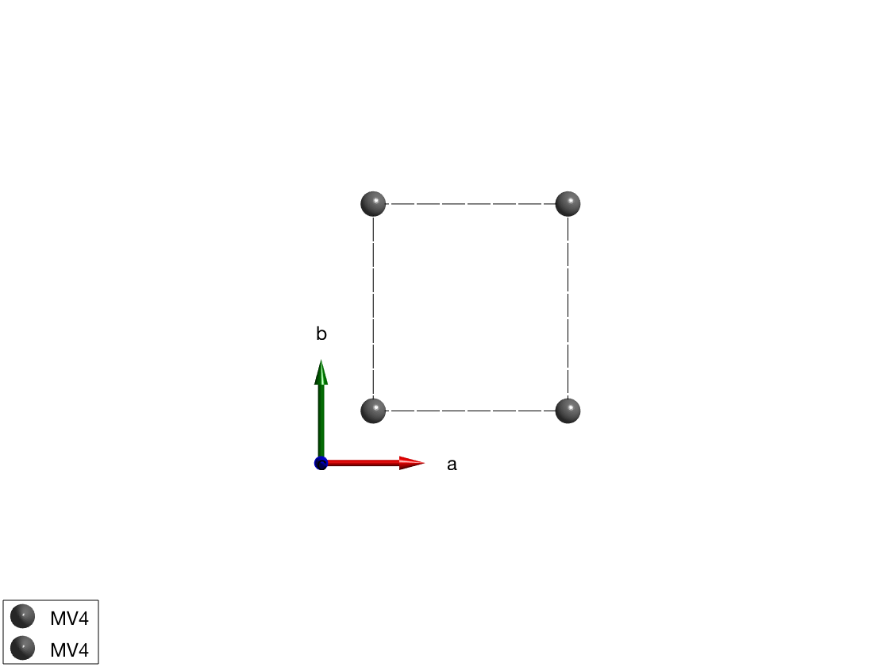
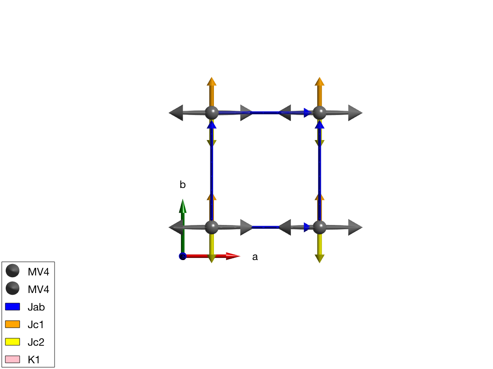
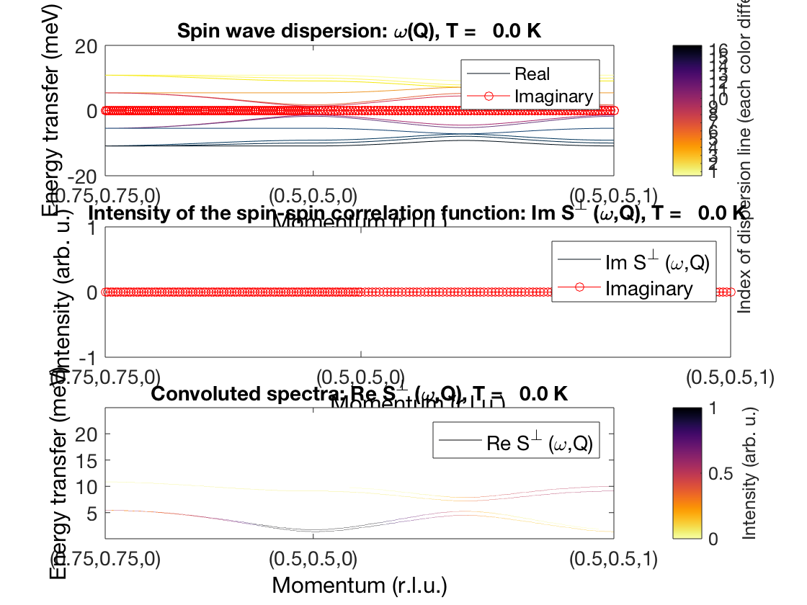

Contents
Spin wave disperion of YVO3
We compare our results with the model from: C. Ulrich, et al. PRL 91, 257202 (2003). see [[http://prl.aps.org/abstract/PRL/v91/i25/e257202]] We create crystal structure of YVO3 in the pseudocubic unit cell, doubled along c-axis. The magnetic atoms are V4+ with spin quantum number S=1/2.
a = 5.2821; b = 5.6144; c = 7.5283; yvo3 = spinw; yvo3.genlattice('lat_const', [a/sqrt(2) b/sqrt(2) c]); yvo3.addatom('r',[0 0 0],'label','MV4','S',1/2,'color','gray') yvo3.addatom('r',[0 0 1/2],'label','MV4','S',1/2,'color','gray') yvo3.gencoupling %yvo3.newcell({[1 1 0] [-1 1 0] [0 0 1]}) plot(yvo3)
Warning: The x-ray scattering form factor for V4+ is undefined, constant 1 will be used instead! If you don't want to see this message add a line to xrayion.dat for the corresponding ion! Warning: The x-ray scattering form factor for V4+ is undefined, constant 1 will be used instead! If you don't want to see this message add a line to xrayion.dat for the corresponding ion!
Magnetic Hamiltonian
The exchange constants are taken from the paper.
Jab = 2.6; Jc = 3.1; delta = 0.35; K1 = 0.90; K2 = 0.97; d = 1.15; %Calculate the canting angle in the ac-plane: theta = 1/2*atan(2*d/(2*Jc-K1-K2)); %Define matrices for the Hamiltonian: Jc1 = -Jc*(1+delta)*eye(3) + diag([K2 0 0]) - [0 0 d;0 0 0;-d 0 0]; Jc2 = -Jc*(1-delta)*eye(3) + diag([K2 0 0]) + [0 0 d;0 0 0;-d 0 0]; yvo3.addmatrix('label','Jab','value',Jab,'color','blue') yvo3.addmatrix('label','Jc1','value',Jc1,'color','orange') yvo3.addmatrix('label','Jc2','value',Jc2,'color','yellow') yvo3.addmatrix('label','K1','value',diag([-K1 0 0]),'color','pink') % Assign the matrices to the magnetic atoms: yvo3.addcoupling('mat','Jab','bond',[1 3]) yvo3.addcoupling('mat','Jc1','bond',2,'subidx',2) yvo3.addcoupling('mat','Jc2','bond',2,'subidx',1) % Add K1 matrix to the single-ion anisotropy: yvo3.addaniso('K1') % Create test magnetic structure, G-type antiferromagnet: par_ms.mode = 'helical'; par_ms.S = [1;0;0]; par_ms.nExt = [2 2 1]; par_ms.k = [1/2 1/2 1]; par_ms.n = [0 1 0]; yvo3.genmagstr(par_ms); %Plotting magnetic structure with anisotropy ellipsoids: plot(yvo3) % Optimising magnetic structure using contrained optimization. Using the % gm_planard() contrained function, we restrict the solution to planar % magnetic structures. The meaning of the x parameters are the following: % (phi1, phi2, ... phiN, kx, ky kz, nTheta, nPhi), where all parameters % except the propagtion vector are in degree. par_opt.xmin = [zeros(1,8) , 0 0 0, 0 0]; par_opt.xmax = [ones(1,8)*360, 0 0 0, 180 180]; par_opt.func = @gm_planar; par_opt.nRun = 10; optRes = yvo3.optmagstr(par_opt); E1 = yvo3.energy; % To check whether we found the optimum, let's run the unconstrained local % optimization, spinw.optmagsteep and see if we can reach lower energy. yvo3.optmagsteep('nRun',1e4); E2 = yvo3.energy; dE = E2-E1 % The unconstrained local optimization reached lower energy. Showing that % it is always good to recheck the results.
dE = -1.2923e-08
Check canting angles
M = yvo3.magstr.S; phi = atan2(M(1,:),M(3,:))*180/pi; %Calculating spin wave dispersion: specYVO3 = yvo3.spinwave({[3/4 3/4 0] [1/2 1/2 0] [1/2 1/2 1] }); specYVO3 = sw_neutron(specYVO3); specYVO3 = sw_egrid(specYVO3,'Evect',linspace(0,25,nE)); %Plotting of spin wave spectra with imaginary components: figure subplot(3,1,1); sw_plotspec(specYVO3,'mode',1,'aHandle',gca,'imag',true); subplot(3,1,2); sw_plotspec(specYVO3,'mode',2,'aHandle',gca,'imag',true); subplot(3,1,3); sw_plotspec(specYVO3,'mode',3,'aHandle',gca);
Written by Sandor Toth 16-Jun-2014